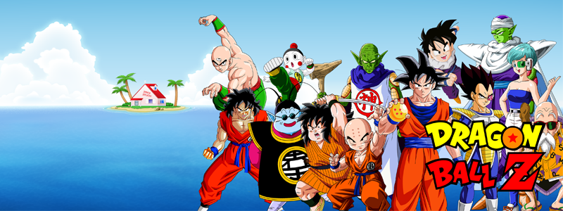
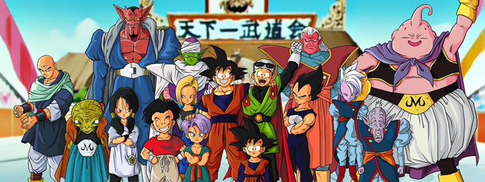
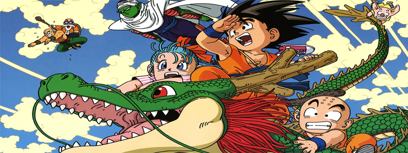

Dragon Ball
Dragon Ball é uma das séries de mangá e anime mais icônicas e influentes criadas por Akira Toriyama. A série foi lançada pela primeira vez em 1984 na revista Weekly Shonen Jump e rapidamente conquistou uma base de fãs global apaixonada.
A história de Dragon Ball segue as aventuras de Son Goku, um jovem saiyajin com uma força sobre-humana e uma determinação inabalável. Ao longo da série, Goku embarca em uma jornada épica para reunir as misteriosas Esferas do Dragão, que concedem um desejo quando reunidas. Ele é acompanhado por uma variedade de amigos e aliados, incluindo Bulma, Mestre Kame, Krillin, Piccolo, Vegeta e muitos outros personagens memoráveis.
A saga de Dragon Ball se desenrola em várias partes, cada uma delas repleta de batalhas épicas, treinamento intenso, poderes incríveis e momentos emocionantes. A série original, frequentemente chamada de "Dragon Ball Clássico", concentra-se nas aventuras de Goku durante sua infância e adolescência. Mais tarde, a sequência "Dragon Ball Z" continua a história com Goku adulto enfrentando ameaças cada vez mais poderosas, incluindo vilões como Freeza, Cell e Majin Buu.
Além disso, "Dragon Ball" gerou uma série de spin-offs, filmes, videogames e produtos relacionados, solidificando seu status como uma franquia de entretenimento duradoura e amada por fãs de todas as idades ao redor do mundo.
Com sua combinação de ação emocionante, humor cativante e personagens carismáticos, "Dragon Ball" deixou uma marca indelével na cultura pop e continua a ser uma fonte de inspiração para muitos, mesmo décadas após sua criação.